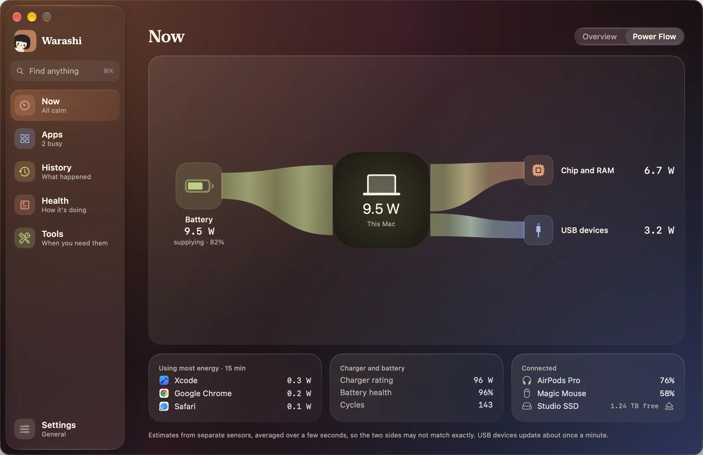

يتوقف عمر البطارية على ما يعمل، وعدد مرات إيقاظه للشريحة، ومقدار جهد وحدة معالجة الرسوميات. بعض التطبيقات يكلّف الكثير أثناء استخدامك له فقط، وبعضها يستنزف في الخلفية طوال اليوم.
افتح «الطاقة» في مراقب النشاط
افتح تبويب الطاقة في مراقب النشاط. «Energy Impact» درجة نسبية للحظة الحالية؛ و«12 hr Power» يعرض المتوسط خلال آخر 12 ساعة. ابحث عن تطبيقات أرقامها عالية لم تكن تستخدمها فعليًا.
أسباب شائعة لاستنزاف البطارية
- علامات تبويب المتصفح فيها فيديو أو إعلانات أو لوحات مباشرة، حتى في الخلفية.
- تطبيقات تُبقي وحدة معالجة الرسوميات مشغولة: الشاشات الخارجية ذات معدل التحديث العالي، وخلفيات سطح المكتب المتحركة، ومكالمات الفيديو.
- المزامنة والفهرسة بعد التحديثات أو التغييرات الكبيرة في الملفات (تحليل الصور، Spotlight).
- تطبيقات Electron تركتها مفتوحة وأنت لا تستخدمها.
افصل بين «في الواجهة» و«في الخلفية»
السؤال المفيد ليس «ما الذي استهلك الطاقة؟» فقط، بل «كم كلّفني في الساعة التي استخدمته فيها فعلًا، وما الذي استنزف الطاقة بينما لم أنظر إليه أصلًا؟». هذا بالضبط ما يجيب عنه الوقت × التكلفة في Warashi، باستخدام عدّادات الطاقة لكل عملية في macOS نفسه.
راقب صحة البطارية
تتراجع صحة البطارية ببطء مع دورات الشحن والحرارة. تعرضها إعدادات النظام › البطارية، ويمكن لـ Warashi تنبيهك حين تقل عن 80% أو تتراجع أسرع من المعتاد.


